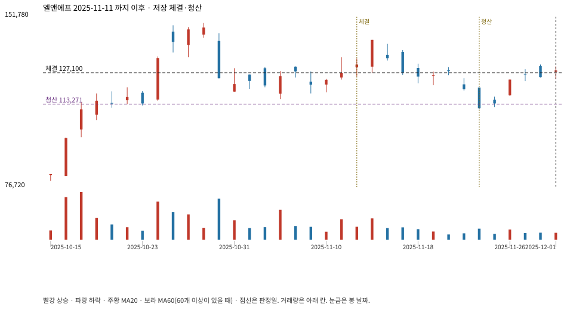

계좌를 다시 돌리지 않았다. 아래는 저장된 주문·체결·청산·비용·손익이다.

{
"case_id": "cc062dc3b799dcee",
"status": "closed",
"trade": {
"symbol": "066970.KS",
"signal_date": "2025-11-11",
"quantity": 69,
"entry": 127100,
"stop": 113328,
"target": 149000,
"planned_risk": 970763.438183999,
"reserved_cash": 8778669.899999999,
"fill": {
"date": "2025-11-12",
"price": 127100,
"fee": 8769.9
},
"exit": {
"date": "2025-11-24",
"price": 113271.336,
"reason": "stop",
"net_pnl": -970763.4381839987,
"ambiguous_bar": false
}
},
"cost": "research fee 10bp each side, slippage 5bp; amounts below are the stored ledger, not a new run",
"chart": "c\/cc062dc3b799dcee.svg"
}